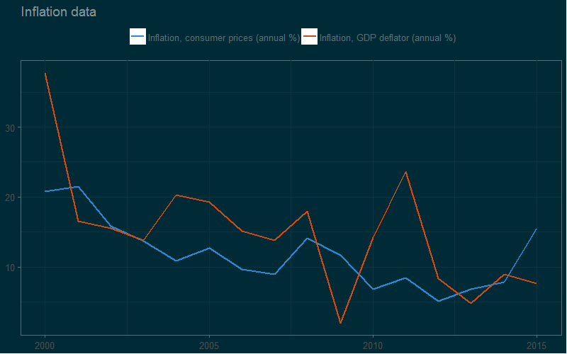

Intro to download economic data in R
Irina Goloshchapova
Center for Macroeconomic Analysis and Short-Term Forecasting
Open Data Science
Plan
Why we want to automate the download data process
What we should use in R if we want download open economic data
How we should use it
Why automate
Why automate
- Frequent need to quickly access the data: regular monitoring, dashboard
- Complex computations with data to obtain final dataset
- You need big data
- Database structure in your pocket
What we should use
What we should use
- R Packages
- Self connection functions to API
How to use
How to use
R Packages
Firstly: Google

How to use
R Packages
How to use
R Packages
Key principles
Read materials and choose package: CRAN, GitHub
Undestand searching and downloading structure in the chosen package: Tutorials
Try simple example: GitHub, R-Bloggers, Google
Download what do you need: R
How to use
R Packages
Example: World Bank
Read materials and choose package
How to use: R Packages
Example: World Bank
How to use
R Packages
Example: World Bank
Undestand searching and downloading structure in the chosen package
install package
search needed indicators codes
define sample of countries
define period of time
define final data format
download
How to use
R Packages
Example: World Bank
Try simple example
library(wbstats)
library(ggplot2)
oil_data <- wb(indicator = c("CRUDE_DUBAI", "CRUDE_BRENT", "CRUDE_WTI", "CRUDE_PETRO"),
startdate = "2012M01", enddate = "2014M12", freq = "M", POSIXct = TRUE)
ggplot(oil_data, aes(x = date_ct, y = value, colour = indicator)) + geom_line(size = 1) +
labs(title = "Crude Oil Price Comparisons", x = "Date", y = "US Dollars")
How to use
R Packages
Example: World Bank
Download what do you need
library(wbstats)
library(ggplot2)
wbsearch(pattern = "inflation", fields = "indicator", extra = TRUE)
# indicatorID indicator
# 8294 NY.GDP.DEFL.KD.ZG Inflation, GDP deflator (annual %)
# 10895 FP.CPI.TOTL.ZG Inflation, consumer prices (annual %)
deflator <- wb(indicator = "NY.GDP.DEFL.KD.ZG", country = "RU", mrv = 16, freq = "Y", POSIXct = TRUE)
CPI <- wb(indicator = "FP.CPI.TOTL.ZG", country = "RU", mrv = 16, freq = "Y", POSIXct = TRUE)
inflation_data <- rbind(deflator, CPI)
g <- ggplot(inflation_data, aes(x = date_ct, y = value, colour = indicator)) + geom_line(size = 1)
g <- g + labs(title = "Inflation data", x = NULL, y = NULL)
g <- g + guides(colour = guide_legend(title = '', size = 3.5))
g <- g + theme_minimal()
g <- g + scale_colour_brewer(palette = 'Set2')
g <- g + theme(legend.position = 'top')
g
How to use
R Packages
Example: World Bank
Download what do you need
